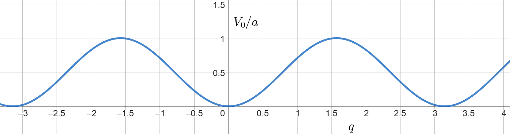
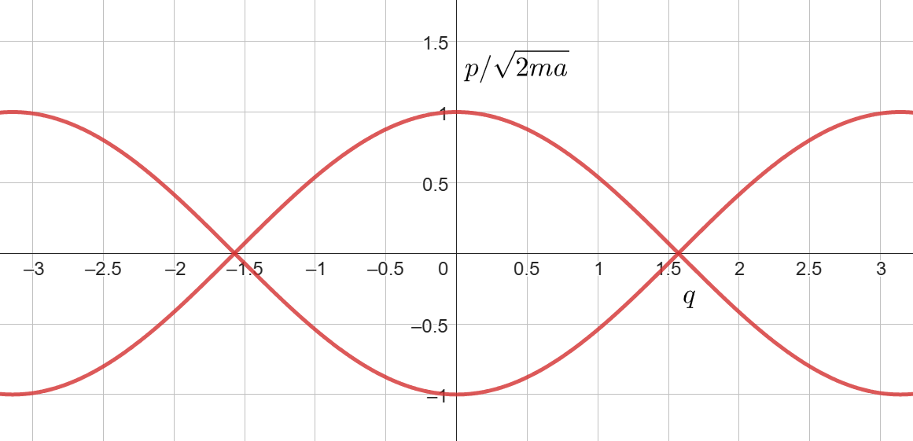
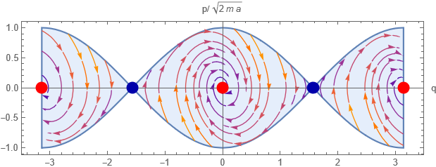

Barátkozzunk kicsit a Poisson-zárójelekkel! Definíció szerint: $$ \begin{aligned} \{f,g\} = \partial_qf \partial_p g - \partial_p f \partial_q g \end{aligned} $$ ami jó, mert velük le lehet írni egy tetszőleges bárminek az időfejlődését: $$ \begin{aligned} \frac{\rd}{\rd t} f = \{f, \mathcal{H}\} + \partial_t f \end{aligned} $$ Különös szerepük van még a Hamiltoni mechanikában a kanonikus változók Poisson-zárójeleinek is.
Definíció szerint, $q$ és $p$ akkor kanonikusak, ha: $$ \begin{aligned} \{q_i, q_j\} &= \frac{\partial q_i}{\partial q_l} \frac{\partial q_j}{\partial p_l} - \frac{\partial q_i}{\partial p_l} \frac{\partial q_j}{\partial q_l} \\ &= 0 \end{aligned} $$ hasonlóképp $$ \begin{aligned} \{p_i, p_j\} &= \frac{\partial p_i}{\partial q_l} \frac{\partial p_j}{\partial p_l} - \frac{\partial p_i}{\partial p_l} \frac{\partial p_j}{\partial q_l} \\ &= 0 \end{aligned} $$ illetve $$ \begin{aligned} \{q_i, p_j\} &= \frac{\partial q_i}{\partial q_l} \frac{\partial p_j}{\partial p_l} - \frac{\partial q_i}{\partial p_l} \frac{\partial p_j}{\partial q_l} \\ &= \delta_{il} \delta_{jl} - 0 \\ &= \delta_{ij} \end{aligned} $$
Számoljunk ki valami bonyolultabbat is, például a perdületek Poisson-zárójelét: $$ \begin{aligned} \{L_i, L_j\} = ? \end{aligned} $$ ahol $$ \begin{aligned} L_i = \epsilon_{ijk} x_j p_k \end{aligned} $$ Beírva: $$ \begin{aligned} \{L_i, L_j\} = \frac{\partial L_i}{\partial q_l} \frac{\partial L_j}{\partial p_l} - \frac{\partial L_i}{\partial p_l} \frac{\partial L_j}{\partial q_l} \end{aligned} $$ Például az első: $$ \begin{aligned} \frac{\partial L_i}{\partial q_l} = \frac{\partial \epsilon_{ijk} q_j p_k}{\partial q_l} = \epsilon_{ijk}p_k \frac{\partial q_j}{\partial q_l} = \epsilon_{ijk}p_k \delta_{jl} = \epsilon_{ilk}p_k \end{aligned} $$ Teljesen hasonlóan a többi is: $$ \begin{aligned} \frac{\partial L_j}{\partial p_l} = \frac{\partial \epsilon_{jmn} q_m p_n}{\partial p_l} = \epsilon_{jmn} q_m \frac{\partial p_n}{\partial p_l} = \epsilon_{jml} q_m \end{aligned} $$ Szóval összegezve: $$ \begin{aligned} \{L_i, L_j\} &= (\epsilon_{ilk}p_k)(\epsilon_{jml} q_m) - (\epsilon_{ipl} q_p)(\epsilon_{jln} p_n) \\ &= \epsilon_{ilk}\epsilon_{jml} p_k q_m - \epsilon_{ipl}\epsilon_{jln}q_p p_n \end{aligned} $$
Használjuk ki, hogy $$ \begin{aligned} \epsilon_{oab}\epsilon_{oxy} = \delta_{ax}\delta_{by} - \delta_{ay}\delta_{bx} \end{aligned} $$ Meg permutáljunk párat ciklikusan, amivel $$ \begin{aligned} \epsilon_{ilk}\epsilon_{jml} p_k q_m &= \epsilon_{lik}\epsilon_{ljm} p_k q_m \\ &= \delta_{ij}\delta_{km} p_k q_m - \delta_{im}\delta_{jk} p_k q_m \\ &= \delta_{ij} p_k q_k - p_j q_i \end{aligned} $$ Illetve a másikra: $$ \begin{aligned} \epsilon_{ipl}\epsilon_{jln}q_p p_n &= \epsilon_{lip}\epsilon_{ljn}q_p p_n \\ &= \delta_{ij}\delta_{pn}q_p p_n - \delta_{in}\delta_{pj}q_p p_n \\ &= \delta_{ij} q_p p_p - q_j p_i \end{aligned} $$ Ebben van egy összegzett index: az nyugodtan átírható, mondjuk $k$-ra. Ezzel a teljes: $$ \begin{aligned} \{L_i, L_j\} &= \delta_{ij} p_k q_k - p_j q_i - \delta_{ij} p_k q_k +q_j p_i \\ &= q_j p_i - p_j q_i \\ &= (\delta_{jn} \delta_{im} - \delta_{jm} \delta_{in} ) q_n p_m \\ &= \epsilon_{oji} \epsilon_{onm} q_n p_m \\ &= \epsilon_{oji} (\epsilon_{onm} q_n p_m) \\ &= \epsilon_{oji} L_o \end{aligned} $$ Tehát: $$ \begin{aligned} \{L_i, L_j\} = \epsilon_{kji} L_k \end{aligned} $$ ami egy egészen nevezetes eredmény, jegyezzük meg.
Előadáson beláttuk, hogy a Hamiltont nem csak egy fázistéren lehet vizsgálni: át tudunk térni másik koordinátákra, amelyekre szintén validak lesznek a Hamilton egyenletek; feltéve, hogy ez a transzformáció kanonikus. Mikor kanonikus egy trafó a $q,p$ fázistérből a $Q,P$ fázistérre? Akkor, ha $$ \begin{aligned} \{Q_i, P_j\}_{q,p} = &\ \delta_{ij} = \{q_i,p_j\}_{Q,P} \\ \{Q_i, Q_j\}_{q,p} = \{P_i,P_j\}_{q,p} = &\ 0 = \{q_i, q_j\}_{Q,P} = \{p_i,p_j\}_{Q,P} \end{aligned} $$ Tehát ha az új koordinátáknak a régiekben vett Poisson zárójelei kanonikusak. Az, hogy melyik a régi és melyik az új, az nem számít.
Ez nagyon hasznos tud lenni arra, hogy egy bonyolultnak tűnő feladatot átírjunk valami egyszerűbbé. Nézzünk erre is egy példát!
Nézzünk meg egy bonyolult Hamiltont, sejtsünk meg rá egy kanonikusnak vélt trafót, aztán bizonyítsuk be, hogy tényleg az is. Legyen a kalapból kihúzott Hamiltonunk: $$ \begin{aligned} \mathcal{H} = \frac{1}{2a} \ln{P^{Q^{2}}}\ln{P^{P^{2}}} - \frac{1}{2}a \omega^2 \left( \left(QP\right)^i +\left(QP\right)^{-i}\right) \end{aligned} $$ Ezt még alakítsuk kicsit. Tudjuk a logaritmikus azonosságokból, hogy $$ \begin{aligned} \ln{P^{Q^{2}}} = Q^{2} \ln{P} \end{aligned} $$ Illetve $$ \begin{aligned} \cos{x} &= \frac{e^{ix} + e^{-ix}}{2} \\ \cos{\ln{x}} &= \frac{e^{i\ln{x}} + e^{-i\ln{x}}}{2} = \frac{x^i + x^{-i}}{2} \end{aligned} $$ Amivel $$ \begin{aligned} \cos{\ln{QP}} = \frac{(QP)^i + (QP)^{-i}}{2} \end{aligned} $$ Tehát a Hamilton $$ \begin{aligned} \mathcal{H} = \frac{1}{2a} Q^2 P^2 \ln^2{P} - a \omega^2 \cos{\ln{(QP)}} \end{aligned} $$
Egy másik kalapból kihúzva, szép lenne a Hamilton, ha $$ \begin{aligned} p = QP \ln{P} \qquad\qquad q = \ln{(QP)} = \ln{Q} + \ln{P} \end{aligned} $$ Kanonikus-e ez a transzformáció? Nézzük meg: $$ \begin{aligned} \{q,p\}_{Q,P} &= \frac{1}{Q} \cdot Q\left( \ln{P} + \frac{P}{P}\right) - \frac{1}{P} \cdot P \ln{P} \\ &=\ln{P} + 1 - \ln{P} = 1 \end{aligned} $$ Ez teljesül. A másik kettő triviális, de azért kiírva: $$ \begin{aligned} \{q,q\}_{Q,P} &= \frac{1}{Q} \frac{1}{P} - \frac{1}{Q} \frac{1}{P} = 0 \\ \{p,p\}_{Q,P} &= P \ln{P} \cdot Q (\ln{P}+1) - P \ln{P} \cdot Q (\ln{P}+1) = 0 \end{aligned} $$ Tehát a Hamilton az úgy rendszerben, szintén kanonikus változókkal: $$ \begin{aligned} \mathcal{H} &= \frac{p^2}{2a} - a\omega^2 \cos{q} \\ &= \frac{p^2}{2mR^2} - mgR \cos{Q} \end{aligned} $$ ami egy ismerős rendszert ír le: az egyszerű ingát.
Ezen módszerek birtokában szinte már bármit meg tudunk mondani. Nézzünk most egy részletes példát, amiben összefoglalunk nagyjából mindent ami kellhet egy tipikus feladat megoldásához.
Vegyünk egy képzelt rendszert, amely Hamilton függvénye: $$ \begin{aligned} \mathcal{H} = \frac{P^2 }{2m \sin^2{Q}} e^{-\gamma t} + a(\sin{\cos{Q}})^2 e^{\gamma t} \end{aligned} $$ szeretnénk ezt megoldani, de ránézésre nem tűnik túl egyszerűnek vagy szépnek. Ilyenkor mindig megpróbálkozhatunk (sokféleképpen) egy kanonikus transzformáció segítségével szebb alakra hozni a Hamiltont. Azt, hogy hogyan tudjuk szebbé transzformálni ízlés kérdés: itt a fizikai intuícióra ™ kell hivatkoznunk.
Például ennél a rendszernél: én szeretném, hogy a kinetikus tagunkban csak a kanonikus impulzus jelenjen meg. Szóval hasraütésre legyen $$ \begin{aligned} p = \frac{P}{\sin{Q}} \end{aligned} $$ Ami majd kiderül, hogy nem teljesen jó, de azt is jó megtanulni, hogy hogyan lehet korrigálni.Ezen felül a $\sin{\cos{Q}}$ se túl szép: legyen $$ \begin{aligned} \cos{Q} = q \qquad \longrightarrow \qquad Q = \arccos{q} \end{aligned} $$ amivel $$ \begin{aligned} P = p \sin{\arccos{q}} = p \sqrt{1 - q^2} \end{aligned} $$
Vajon ez kanonikus transzformáció-e? Nézzük meg a Poisson-zárójelek segítségével: $$ \begin{aligned} \{Q, P\}_{q,p} &= \frac{\partial Q}{\partial q}\frac{\partial P}{\partial p} - \frac{\partial Q}{\partial p}\frac{\partial P}{\partial q} \\ &= - \frac{1}{\sqrt{1 - q^2}} \sqrt{1 - q^2} - 0 \\ &= -1 \end{aligned} $$ Ez pont egy előjellel tér el attól amit szeretnénk. Módosítsuk a változóinkat úgy, hogy ez magjavuljon: legyen például $$ \begin{aligned} p = -\frac{P}{\sin{Q}} \end{aligned} $$ amivel már jók vagyunk. Ezen felül meg illik még nézni a másik két zárójelet is: $$ \begin{aligned} \{Q, Q\}_{q,p} &= \frac{\partial Q}{\partial q}\frac{\partial Q}{\partial p} - \frac{\partial Q}{\partial p}\frac{\partial Q}{\partial q} \\ &= 0-0=0 \end{aligned} $$ illetve az egy fokkal bonyolultabb: $$ \begin{aligned} \{P, P\}_{q,p} &= \frac{\partial P}{\partial q}\frac{\partial P}{\partial p} - \frac{\partial P}{\partial p}\frac{\partial P}{\partial q} \\ &= -\frac{pq}{\sqrt{1-q^2}} \sqrt{1 - q^2} + \sqrt{1 - q^2} \frac{pq}{\sqrt{1-q^2}} = 0 \end{aligned} $$ Ez most még triviális volt, de nem baj, ha gyakorlunk arra az esetre, amikor nem lesz az (több dimenziós esetben). Minden esetre beláttuk, hogy ezzel a változócserével is kanonikusak maradunk: érvényesek rájuk is a Hamilton egyenletek.
Kihasználva a fentieket, a trafó után a Hamiltonunk: $$ \begin{aligned} \mathcal{H} = \frac{p^2}{2m} e^{-\gamma t} + a\sin^2{q}\ e^{\gamma t} \end{aligned} $$ A feladat kedvéért most csalok egy kicsit: az előző koordináták alapján $q$ csak $\pm1$ közé eshetne. Most demonstrációs célokkal legyen $q \in [-\pi, \pi]$. Ezzel a megkötéssel tudjuk ábrázolni a potenciális energia exponenciális lecsengés nélküli részét:

Mit tudunk mondani a mozgásról? Ehhez először is érdemes felírnunk a mozgásegyenleteket: $$ \begin{aligned} \dot{q} &= \frac{\partial \mathcal{H}}{\partial p} \qquad\qquad \ \ \, \dot{p} = - \frac{\partial \mathcal{H}}{\partial p} \\ m \dot{q} &= p\ e^{-\gamma t} \qquad\qquad \dot{p} = - 2 a \sin{q} \cos{q}\ e^{\gamma t} \end{aligned} $$ Megoldani őket természetesen már más tészta: numerikusan biztos lehetséges. Analitikusan és vizuálisan viszont anélkül is tudunk mondani valamit, a fázisterek és a fixpontvizsgálat módszereinek használatával.
A fázistér felrajzolásához kelleni fog, hogy milyen kezdeti energiával indult a rendszer. Legyen ez most $$ \begin{aligned} \mathcal{H}(t=0) = \frac{p^2}{2m} + a \sin^2{q} = a \end{aligned} $$ Mivel egy disszipatív rendszerünk van, az energia ennél csak kisebb lesz: a fázisterünk határai tehát $$ \begin{aligned} \frac{p^2}{2m} + a \sin^2{q} &\leq a \\ \frac{p^2}{2m} &\leq a - a \sin^2{q} = a\cos^2{q} \\ p^2 &\leq 2ma\cos^2{q} \\ |p| &\leq \sqrt{2ma} |\cos{q}| \end{aligned} $$

Van nekünk egy egyenletrendszerünk, mégpedig $$ \begin{aligned} \dot{q} &= \frac{p}{m} \ e^{-\gamma t} \\ \dot{p} &= - 2 \sin{q} \cos{q}\ e^{\gamma t} \end{aligned} $$ Az első relatívve könnyű kérdés amit fel tudunk tenni: van-e ezeknek egy olyan pontja, amibe ha a rendszer belekerül (akár mert odarakjuk, akár magától) akkor ott is marad? Ezek a $(q_0, p_0)$ fixpontok, amiket úgy kapunk, hogy a fenti egyenleteket nullává tesszük: $$ \begin{aligned} 0 &= \frac{p_0}{m} \ e^{-\gamma t} \\ 0 &= - 2 \sin{q_0} \cos{q_0}\ e^{\gamma t} \end{aligned} $$ Ennek megoldásai: $$ \begin{aligned} p_0 &= 0 \\ q_0 &\in \{0, \pm \frac{\pi}{2}, \pm \pi\} \end{aligned} $$
A fixpontok bekategorizálása megy például a lineáris stabilitásvizsgálattal. Csináljuk ezt meg most a mi egyenleteinkre! Először is, a Jacobi: $$ \begin{aligned} \underline{\underline{J}} = \begin{pmatrix} 0 && \frac{e^{-\gamma t}}{m} \\ -2e^{\gamma t}(\cos^2{q}-\sin^2{q}) && 0 \end{pmatrix} \end{aligned} $$ Vegyük ezt most a $p=0$, $q=\pi /2$ pontban! Ott $\sin^2{\frac{\pi}{2}} = 1$, $\cos^2{\frac{\pi}{2}} = 0$, tehát a Jacobi: $$ \begin{aligned} \underline{\underline{J}}|_{\pi/2} = \begin{pmatrix} 0 && \frac{e^{-\gamma t}}{m} \\ 2e^{\gamma t} && 0 \end{pmatrix} \end{aligned} $$ Ennek a sajátértékei: $$ \begin{aligned} \lambda^2 = 2e^{\gamma t}\frac{e^{-\gamma t}}{m} = \frac{2}{m} \end{aligned} $$ Az egyik pozitív, a másik negatív: ez tehát egy nyeregpont lesz.
Nézzük meg ugyanezt a $0,\pm \pi$ pontokban. Ott $$ \begin{aligned} \underline{\underline{J}}|_{\pi/2} = \begin{pmatrix} 0 && \frac{e^{-\gamma t}}{m} \\ -2e^{\gamma t} && 0 \end{pmatrix} \end{aligned} $$ aminek a sajátértékei $$ \begin{aligned} \lambda^2 = -\frac{2}{m} \end{aligned} $$ tisztán képzetesek. Na erről nem mondott semmit a lineáris stabilitásvizsgálat: nem is fog. Itt kivételesen tudunk viszont trükközni egyet: a Hamiltoni mechanikánkból térjünk vissza a jó öreg Lagrange-ira: $$ \begin{aligned} m \ddot{q} &= \dot{p} e^{-\gamma t} - \gamma p e^{-\gamma t} \\ m \ddot{q} &= -2 \sin{q}\cos{q} - \gamma p e^{-\gamma t} \end{aligned} $$ És visszadézve a csillapított oszcillátort: $$ \begin{aligned} p = \frac{\partial \mathcal{L}}{\partial \dot{q}} = m \dot{q} e^{\gamma t} \end{aligned} $$ tehát $$ \begin{aligned} m \ddot{q} = -2 \sin{q}\cos{q} - \gamma m \dot{q} \end{aligned} $$ Nevezzük el $\dot{q}$-t mondjuk $z$-nek! Ekkor $$ \begin{aligned} \dot{q} &= z \\ m\dot{z} &= -2 \sin{q} \cos{q} - \gamma m z \end{aligned} $$
Erre ugyanúgy rá tudjuk küldeni a fixpontvizsgálatot. A Jacobi itt: $$ \begin{aligned} \underline{\underline{J}} = \begin{pmatrix} 0 && 1 \\ -\frac{2}{m}(\cos^2{q}-\sin^2{q}) && -\gamma \end{pmatrix} \end{aligned} $$ Amit már nullában (illetve $\pm \pi$-ben) kiértékelve kicsit mást kapunk: $$ \begin{aligned} -&\lambda(-\gamma -\lambda) + \frac{2}{m} = 0 \\ &\lambda^2 + \gamma \lambda + \frac{2}{m} = 0 \\ &\lambda_\pm = -\frac{\gamma}{2} \pm \frac{1}{2}\sqrt{\gamma^2 - \frac{8}{m}} \end{aligned} $$ Bárhogy nézzük, $\sqrt{\gamma^2 - \frac{8}{m}}$ kisebb lesz gammánál: még a plusszos megoldás esetében sem tudja pozitívvá tenni a sajátértéket. Tehát mindkettő negatív: ezek a pontok vonzópontok lesznek. Mindezeknek a tudatában fel tudjuk rajzolni a fázisteret, és ránézésre megmondani, hogy egy tetszőleges kezdeti feltételekből indított ponttal nagyjából mi fog történni.

Kíváncsiak lehetünk rá, hogy ebben a rendszerben hogyan változnak a koordinátákon kívül egyéb dolgok is. Nézzük meg például, hogy hogyan változik a kinetikus tag az időben: $$ \begin{aligned} \dot{K} = \{K, \mathcal{H}\} + \partial_t K \end{aligned} $$ ahol $$ \begin{aligned} K = \frac{p^2}{2m} e^{-\gamma t} \end{aligned} $$ Számoljuk ki a parciális deriváltját: $$ \begin{aligned} \partial_t K =- \gamma \frac{p^2}{2m} e^{-\gamma t} = - \gamma K \end{aligned} $$ illetve a Poisson zárójelét: $$ \begin{aligned} \{K, \mathcal{H}\} &= \frac{\partial K}{\partial q}\frac{\partial \mathcal{H}}{\partial p} - \frac{\partial K}{\partial p}\frac{\partial \mathcal{H}}{\partial q} = \\ &=0\frac{\partial \mathcal{K}}{\partial p} - \frac{\partial K}{\partial p}\frac{\partial V}{\partial q} = \\ & = - \frac{p}{m} e^{-\gamma t} \cdot 2a \sin{q} \cos{q} e^{\gamma t} \\ &= - \frac{2a}{m} p \sin{q} \cos{q} \end{aligned} $$
Hasonlóképp, a potenciális tagra: $$ \begin{aligned} \partial_t V = \gamma V \end{aligned} $$ $$ \begin{aligned} \{V, \mathcal{H}\} &= \frac{\partial V}{\partial q}\frac{\partial \mathcal{H}}{\partial p} - \frac{\partial V}{\partial p}\frac{\partial \mathcal{H}}{\partial q} \\ &= \frac{\partial V}{\partial q}\frac{\partial K}{\partial p} -0 \\ &= \frac{2a}{m} p \sin{q} \cos{q} \end{aligned} $$ Kicsit átírva a dolgokat $$ \begin{aligned} K &= \frac{p^2}{2m}e^{-\gamma t} \ \ \, \qquad \longrightarrow \qquad p = \sqrt{2mK} e^{\gamma t/2}\\ V &= a \sin^2{q} e^{\gamma t} \qquad \longrightarrow \qquad \sin{q} = \sqrt{\frac{V}{a}}e^{-\gamma t/2} \end{aligned} $$ Az utóbbiból jön még, hogy $$ \begin{aligned} \sin{q} &= \sqrt{\frac{V}{a}}e^{-\gamma t/2} \\ \sin^2{q} &= \frac{V}{a}e^{-\gamma t} \\ \cos^2{q} &= 1 - \frac{V}{a}e^{-\gamma t} \\ \cos{q} &= \sqrt{e^{\gamma t} - \frac{V}{a}}e^{-\gamma t/2} \end{aligned} $$ Ezeket beírva: $$ \begin{aligned} \dot{K} &= - \frac{2a}{m} \sqrt{2mK} e^{\gamma t/2} \sqrt{\frac{V}{a}}e^{-\gamma t/2} \sqrt{1 - \frac{V}{a}}e^{-\gamma t/2} - \gamma K \\ \dot{K} &= - 2 \sqrt{2\frac{a}{m}KV\left(e^{\gamma t} - \frac{V}{a} \right)}e^{-\gamma t/2} - \gamma K \\ \dot{V} &= 2 \sqrt{2\frac{a}{m}KV\left(e^{\gamma t} - \frac{V}{a} \right)}e^{-\gamma t/2} + \gamma V \end{aligned} $$
Ami szintén egy teljesen valid diffegyenlet-rendszer. Érdekes lehet még ehelyett az energiák $E$ összegét és $\Delta$ különbségét is vizsgálni: $$ \begin{aligned} \dot{E} &=\frac{\rd}{\rd t}(K+V) = -\gamma (K-V) \\ \dot{\Delta} &=\frac{\rd}{\rd t}(K-V) = - 4 \sqrt{2\frac{a}{m}KV\left(e^{\gamma t} - \frac{V}{a} \right)}e^{-\gamma t/2} - \gamma (K+V) \end{aligned} $$ Kellően sok idő után ez közelítőleg $$ \begin{aligned} \dot{E} &= -\gamma \Delta \\ \dot{\Delta}& = - \gamma E \end{aligned} $$ tehát $$ \begin{aligned} \ddot{E} = \gamma^2 E \qquad\qquad \ddot{\Delta} = \gamma^2 \Delta \end{aligned} $$ mind az összenergia, mind a kinetikus és potenciális energiák különbsége exponenciálisan lecseng. Legalábbis ez lenne, ha nem hibáztam volna a feladatban pár sorral korábban. Ettől függetlenül szép az eredménye, szóval itthagyom. Ha $a$ pici, akkor még közelítőleg valid is.
Legyen most $\gamma = 0$! Tehát $$ \begin{aligned} \mathcal{H} = \frac{p^2}{2m} + a \sin^2{q} \end{aligned} $$ Ilyenkor csak keringés van: mennyi a frekvenciája? Ehhez nézzünk egy új koordináta trafót: $$ \begin{aligned} J = \oint_{E=E_0} p \rd q && P = \frac{1}{2\pi }\oint_{E=E_0} p \rd q \end{aligned} $$ amit egy olyan körintegrállal definiálunk, ahol konstans az energia. A $2\pi$ itt konvenció: előadáson lemaradt, picit más lesz a jelentése $J$-nek és $P$-nek (nem szokás amúgy őket megkülönböztetni így betűkkel de az első a hatás a második pedig a redukált hatás). Legyen a $t=0$ pillanatban ez a konsans energia valami $E$ szám.
Ekkor, ha megmarad: $$ \begin{aligned} E =\frac{p^2}{2m} + a \sin^2{q} \end{aligned} $$ ami jó, mert a fenti integrálba ki kell fejeznünk $$ \begin{aligned} E &=\frac{p^2}{2m} + a \sin^2{q} \\ E&-a \sin^2{q} = \frac{p^2}{2m} \\ p &= \pm \sqrt{2m(E-a \sin^2{q})} \end{aligned} $$ most az élet egyszerűsítése végett legyen $$ \begin{aligned} E(t=0) = a \end{aligned} $$ amivel $$ \begin{aligned} p_\pm &= \pm \sqrt{2mE\cos^2{q}} \\ p_\pm &= \pm \sqrt{2mE}\ |\cos{q}| \end{aligned} $$
Az integrálhoz rajzoljuk fel, hogy hogyan néz ki egy periódus: először legurulunk a lejtőn, aztán fel a másik oldalt, aztán pedig vissza ugyanúgy. Tehát a $q$ koordinátánkban elindulunk $-\frac{\pi}{2}$-től, elmegyünk $\frac{\pi}{2}$-ig, aztán vissza. Mindez alatt milyen az impulzus iránya? Amíg meg nem fordulunk a második dombtetőn addig pozitív, utána viszont negatív. Tehát az integrálunk, és az ő határai határai: $$ \begin{aligned} J &= \oint_{E=E_0} p \rd q \\ &= \int_{-\pi/2}^{\pi/2} p_+ \rd q + \int_{\pi}^{-\pi} p_- \rd q \\ &= \int_{-\pi/2}^{\pi/2} p_+ \rd q - \int_{-\pi}^{\pi} p_- \rd q \\ &= \int_{-\pi/2}^{\pi/2} p_+ \rd q + \int_{-\pi}^{\pi} p_+ \rd q \\ &= 2 \int_{-\pi/2}^{\pi/2} p_+ \rd q \end{aligned} $$ Ezt már csak el kell végezni. Amit kapunk: $$ \begin{aligned} J = 2\sqrt{2mE} \underbrace{\int_{-\pi/2}^{\pi/2} |\cos{q}| \rd q}_{=2} = 4\sqrt{2mE} \end{aligned} $$ egy konstans, ami egy jó impulzus változó: a kérdés az, hogy mi lesz a hozzá tartozó $Q$ ciklikus koordináta.
Tegyük fel, hogy kanonikusak. Ekkor $$ \begin{aligned} \dot{Q} = \frac{\partial \mathcal{H}}{\partial J} = \nu(J) \end{aligned} $$ Mi nekünk $J$, és vele a Hamilton? $$ \begin{aligned} J &= 4\sqrt{2mE} \\ J^2 &= 32 m E \\ E &= \frac{1}{32 m}J^2 \end{aligned} $$ tehát $$ \begin{aligned} \dot{Q} = \nu(J) = \frac{\partial E}{\partial J} = \frac{J}{16 m} = \frac{1}{4 m}\sqrt{2mE} = \frac{1}{4}\sqrt{\frac{2E}{m}} \end{aligned} $$ Ez lesz tehát a körmozgás $\nu$ frekvenciája. Vele a periódusidő egyszerűen $$ \begin{aligned} T = \frac{1}{\nu} = 4\sqrt{\frac{m}{2E}} \end{aligned} $$